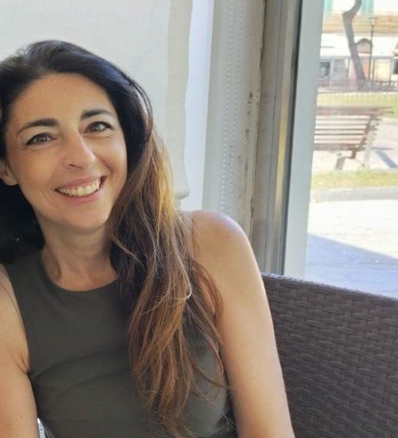
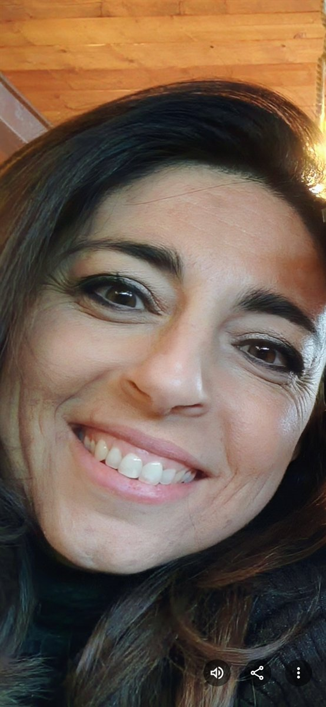
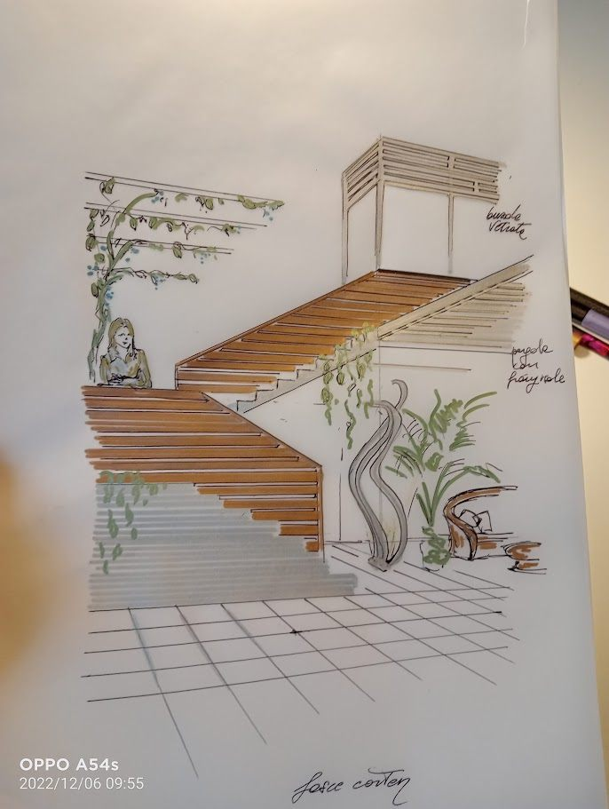
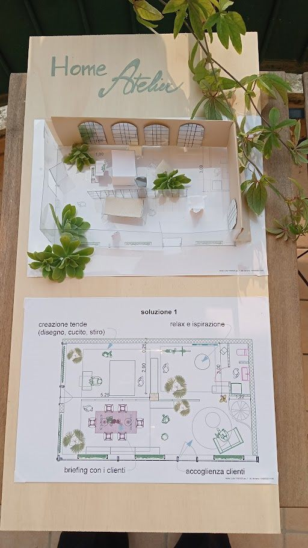
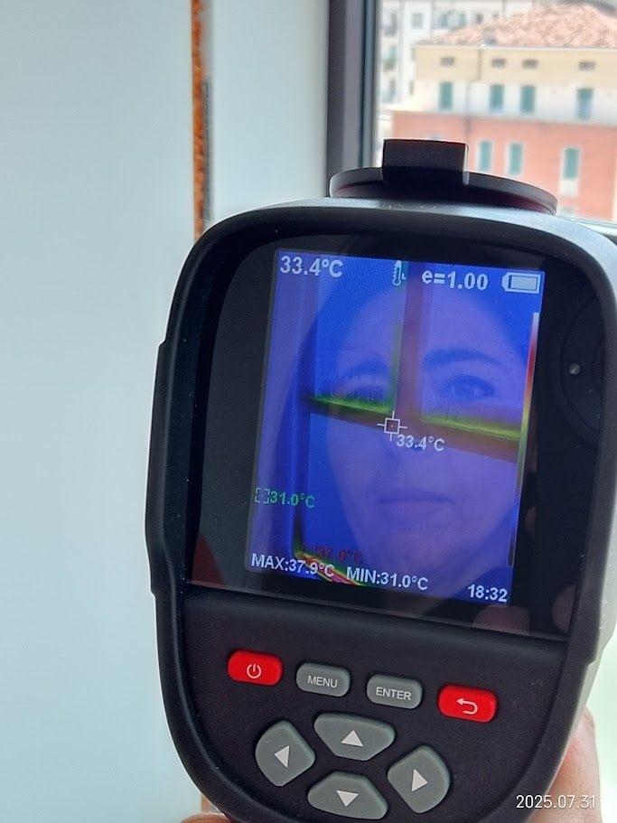
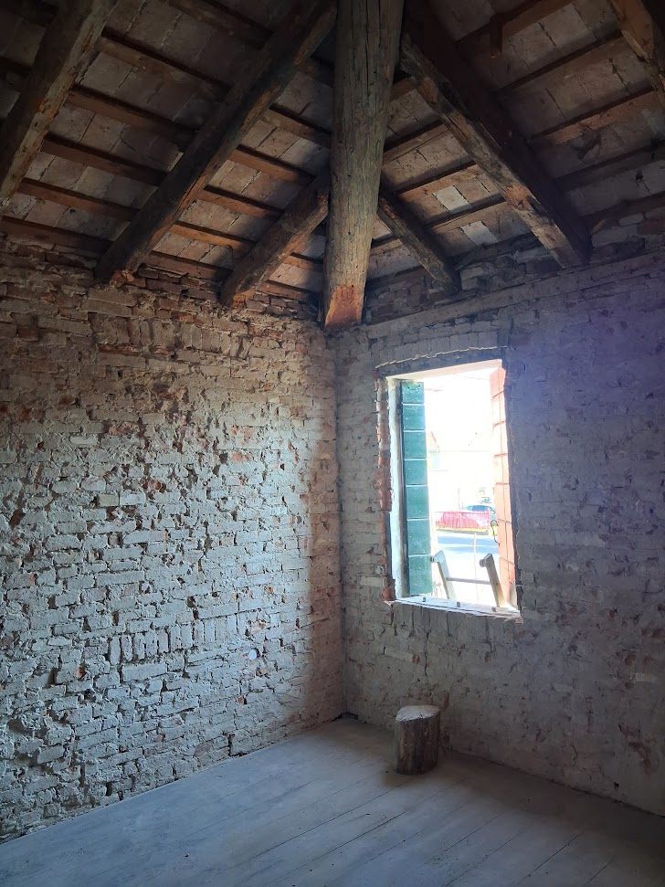

Professionalità ,
Visione e Dettaglio
Architetta con oltre 22 anni di esperienza, unisco la precisione tecnica alla sensibilità estetica per dare forma a spazi che durano nel tempo.

Chi sono
Sono Roberta Mariano, architetta libera professionista con studio a Borgoricco, in provincia di Padova. Mi sono laureata allo IUAV di Venezia — una delle scuole di architettura più prestigiose d'Italia — e da oltre 22 anni esercito la professione con passione, rigore e un'innata curiosità per la materia.
La mia formazione mi ha insegnato che l'architettura non è mai solo estetica: è una disciplina che richiede conoscenza strutturale, sensibilità ambientale, rispetto per le normative e, soprattutto, ascolto profondo delle persone che abiteranno quegli spazi. Per questo ogni progetto nasce sempre da un dialogo diretto e continuativo con il cliente.
Nel corso degli anni ho sviluppato una specializzazione trasversale che mi permette di muovermi con uguale competenza tra progettazione architettonica, interior design, certificazione energetica degli edifici e perizia tecnica estimativa. Sono Consulente Tecnico d'Ufficio del Tribunale di Padova da oltre un decennio, con un portfolio di più di 100 relazioni tecniche prodotte in ambito civile e commerciale.
Sono anche certificatore energetico accreditato: ho emesso oltre 1.000 Attestati di Prestazione Energetica per privati, agenzie immobiliari, istituti bancari e società di riqualificazione energetica, con una percentuale di approvazione del 100%. La sostenibilità non è per me un'etichetta, ma una responsabilità professionale concreta.
Tappe Professionali
Un percorso costruito sul campo, tra aula e cantiere, tra normativa e creatività .
Laurea allo IUAV di Venezia
Conseguita la laurea in Architettura presso lo Iuav di Venezia, una delle scuole di architettura più innovative d'Europa. Il percorso accademico ha gettato le basi per una professione orientata alla qualità del progetto e al rispetto del contesto.
Libera Professione & Prime Collaborazioni
Avvio dell'attività in proprio, affiancando progettazioni residenziali a lavori di interior design. Collaborazioni con studi di ingegneria e imprese edili del Veneto per interventi civili e commerciali di media entità . In questo periodo si consolida l'approccio multidisciplinare che caratterizza ancora oggi il metodo di lavoro.
Nomina a CTU del Tribunale di Padova
Incarico come Consulente Tecnico d'Ufficio (CTU) presso il Tribunale civile di Padova per la materia edilizia e immobiliare. L'esperienza forense ha affinato la capacità di analisi, la precisione documentale e la gestione di dossier complessi, competenze che arricchiscono ogni progetto.
Specializzazione in Certificazione Energetica
Accreditamento come certificatore energetico e avvio di una intensa attività di redazione di APE per privati, agenzie immobiliari e banche. In questo periodo vengono emessi oltre 700 attestati, tutti approvati. La pubblicazione del libro "Eco-viaggio dentro la tua casa" nel 2014 consolida la competenza divulgativa sul tema della sostenibilità .
Perito Estimatore & Superbonus
Ampliamento delle competenze verso la perizia estimativa avanzata: valutazioni per istituti di credito, esecuzioni immobiliari e pratiche Superbonus 110%. Lo studio raggiunge quota 1.000+ perizie prodotte e 2.000+ clienti serviti, mantenendo un rapporto diretto e personale con ciascuno di essi.
Cosa guida il mio lavoro
Principi che informano ogni decisione progettuale, ogni perizia, ogni consulenza.
Creatività Tecnica
Ogni vincolo normativo o strutturale è un'opportunità di design. La soluzione più elegante nasce spesso dal rispetto rigoroso delle regole, non dalla loro elusione. Creatività e tecnica, per me, non si oppongono: si alimentano a vicenda.
Aggiornamento Continuo
Le normative cambiano, i materiali evolvono, le tecniche costruttive si rinnovano. Rimanere aggiornata è un dovere etico verso i clienti. Mi formo costantemente in ambito energetico, strutturale, acustico e progettuale per offrire sempre il meglio disponibile.
Relazione e Ascolto
Un buon progetto nasce da una buona conversazione. Dedico tempo all'ascolto delle esigenze reali, dei sogni e dei vincoli economici di ogni cliente. Solo comprendendo a fondo le persone è possibile creare spazi che le rappresentino davvero.
Sostenibilità Responsabile
La sostenibilità non è una moda: è una scelta etica che impatta il pianeta e il portafoglio dei clienti. Progetto con materiali a basso impatto ambientale, lavoro per ridurre i consumi energetici e cerco soluzioni che abbiano senso anche tra vent'anni.
"Eco-viaggio dentro la tua casa"
Un libro divulgativo sull'abitare ecologico, nato dall'esperienza diretta di centinaia di sopralluoghi e certificazioni energetiche.
dentro la tua
casa Roberta Mariano
2014
Nel 2014 ho scritto e pubblicato "Eco-viaggio dentro la tua casa", un libro che esplora il concetto di abitazione ecologica in modo accessibile e concreto. Non un manuale tecnico, ma un invito a guardare la propria casa con occhi nuovi: come un organismo vivo che respira, consuma, disperde calore e interagisce con l'ambiente esterno.
Il testo nasce dall'esperienza diretta di centinaia di sopralluoghi e certificazioni energetiche: ho visto edifici degli anni '70 trasformarsi in abitazioni a basso consumo, famiglie ridurre del 40% le bollette con interventi mirati, e proprietari riscoprire il piacere di vivere in spazi sani e confortevoli.
Il libro ha riscosso un riscontro positivo tra professionisti e cittadini curiosi, diventando uno strumento divulgativo in alcune scuole e associazioni di categoria del Veneto. È disponibile su richiesta diretta allo studio.
Dal Segno al Cantiere
Ogni progetto comincia a matita. Schizzi, prospettive, plastici fisici: il pensiero progettuale prende forma sul foglio prima di diventare disegno tecnico. Sul cantiere, lo stesso metodo: la presenza diretta, lo sguardo, la termocamera, l'igrometro.




Lavorare senza confini
L'architettura, per me, è prima di tutto un mestiere relazionale: chiede di muoversi, ascoltare, vedere i luoghi con i propri occhi. Per questo non ho legato lo studio a un solo indirizzo — il progetto nasce dove sta il cliente.
"Non ho un indirizzo fisso, perché trovo ispirazione ovunque. Dal cuore pulsante della città al relax del mare, il mondo è il mio ufficio e la creatività non conosce confini geografici." — Roberta Mariano, Architetta
Questo spirito si riflette anche nelle collaborazioni internazionali maturate nel tempo, con progetti sviluppati in Canada e nel Nord America, a fianco di team multidisciplinari che hanno arricchito la visione progettuale con prospettive diverse.
Collaboriamo insieme
Hai un progetto, una domanda, o semplicemente vuoi conoscere come lavoro? Scrivimi: la prima conversazione è sempre gratuita e senza impegno.
Contattami ora